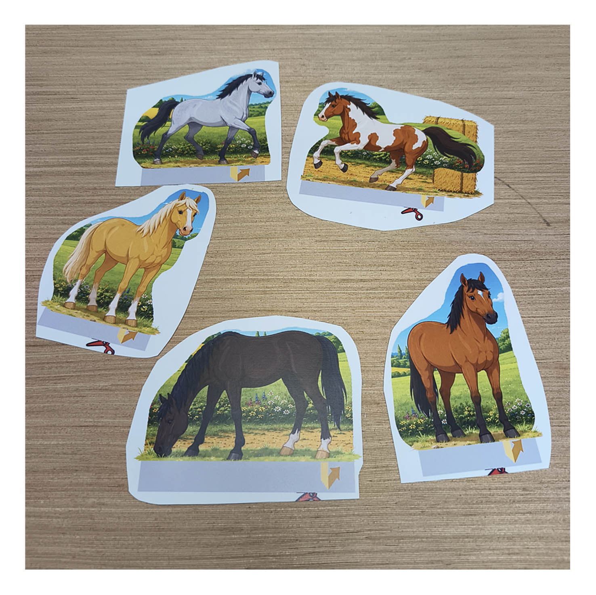
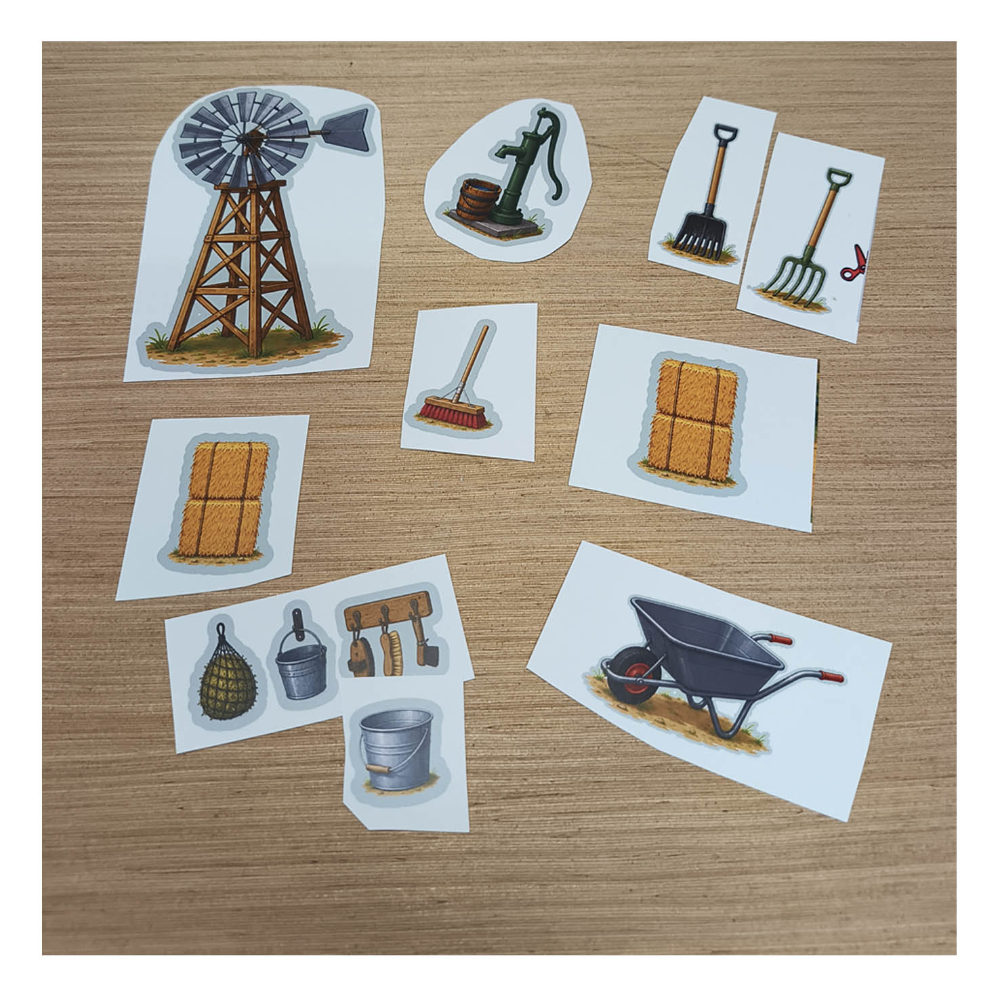
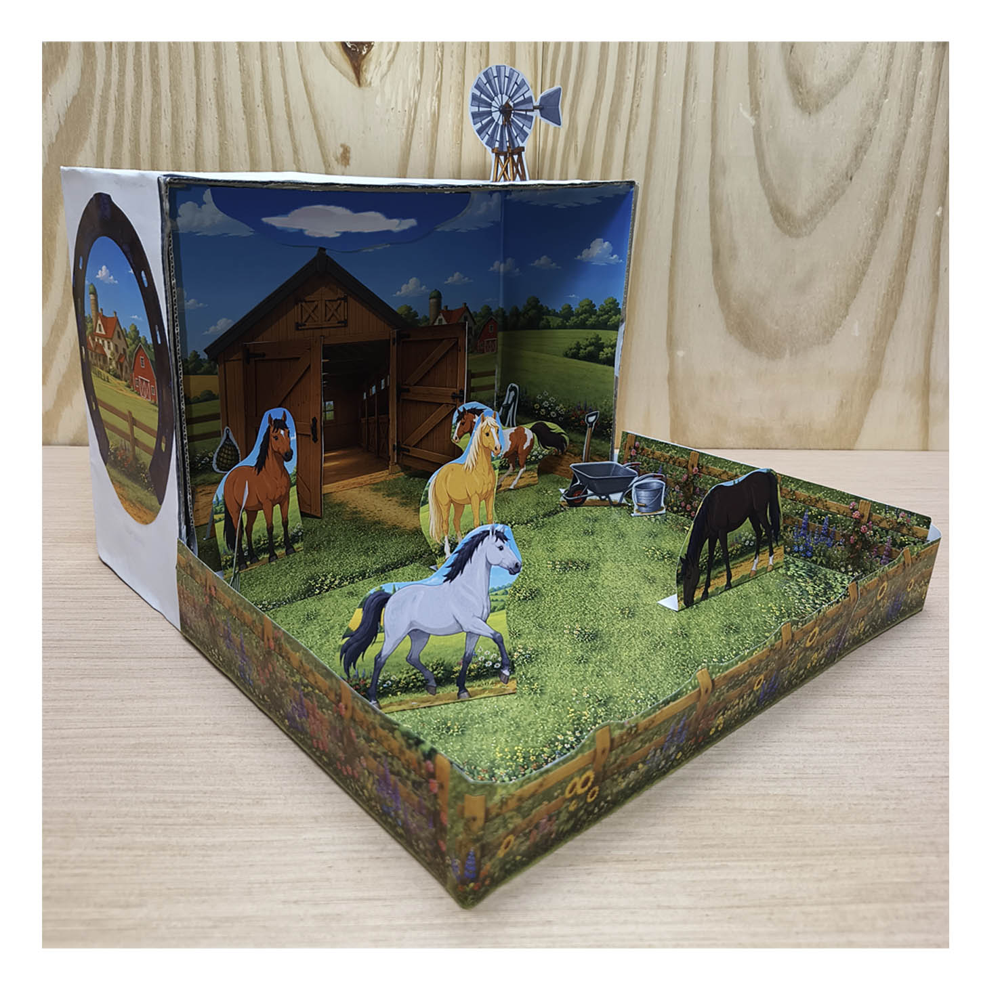

STEP 01
Print the stable, paddock backgrounds, horses, fences and smaller country details from the digital PDF.

Turn an ordinary shoebox into a colorful little horse ranch with a wooden stable, large paddock, printable horses, country fences, flowers and a windmill.
View the Printable Kit on EtsyA shoebox, a printer, scissors and some glue are all you need to start creating a small horse world of your own.
The finished scene combines a cozy wooden stable with a large grassy paddock, surrounded by country fences, wildflowers and a peaceful rural landscape. A traditional windmill adds a little extra ranch and western character.
Kids can use the five printable horses included with the project, or leave some extra space for small toy horses, ponies and farm animals they already have.
It works as a quiet afternoon craft, rainy-day activity, horse-themed school project, homeschool activity or simply a fun project for a child who loves horses and making things.
Print the illustrated pages, cut out the different pieces and gradually transform an empty shoebox into a three-dimensional stable and paddock.
Print the stable, paddock backgrounds, horses, fences and smaller country details from the digital PDF.

Cut out the horses and other pieces you want to use and prepare them for layering inside the shoebox.

Arrange the stable, paddock, horses and ranch details to build your own miniature country horse scene.

The inside of the shoebox first becomes the countryside around the stable. Grass-covered floors, a dirt path and illustrated rural scenery form the base of the paddock.
Wooden fence sections with flowers and plants are placed along the edges. These raised paper pieces help turn the flat printed artwork into a more convincing miniature pasture.
A larger shoebox gives you a little more room for the paddock and toy horses, but there is no exact box size required. Background pieces can simply be trimmed or slightly overlapped where needed.
The stable is the centerpiece, but fences, horses and small ranch accessories give the finished scene its depth and character.

Separate paper doors and layered stable parts let the wooden barn project forward from the background instead of remaining completely flat.

Position the double doors open and you can see the illustrated interior with wooden stalls, windows and lights behind them.

Flower-covered wooden fences create a low 3D edge around the grass and help make the paddock feel like a real enclosed field.

A windmill, water pump, wheelbarrow, buckets, hay and stable tools can be arranged wherever they look best in your scene.
Follow the full landscape tutorial from the printed pages to the finished stable and paddock, with every step shown on screen.
This short video gives a quick look around the completed shoebox diorama and its stable, paddock, horses and country details.
Regular printer paper works well. Slightly thicker paper or cardstock can make some of the standing pieces stronger.
Cutting, arranging and gluing the scene makes this a hands-on horse craft, but the finished diorama can also become a small play area for toy horses and ponies.
Kids can follow the example scene or create their own layout for the horses, fences and ranch accessories. That means every finished stable can look a little different.
It can also be used as a horse-themed school project, a farm activity, a setting for storytelling or simply a miniature world to keep adding to after the original craft is finished.
Different angles show how the layered paper pieces work together to create depth inside the shoebox.




From forests and deserts to oceans and grasslands, each project turns an ordinary shoebox into a different miniature scene.
The complete 13-page printable Horse Stable & Paddock project is available as a digital download with both A4 and US Letter versions.
View the Horse Stable & Paddock on Etsy